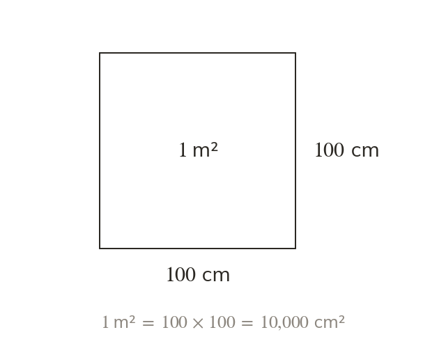
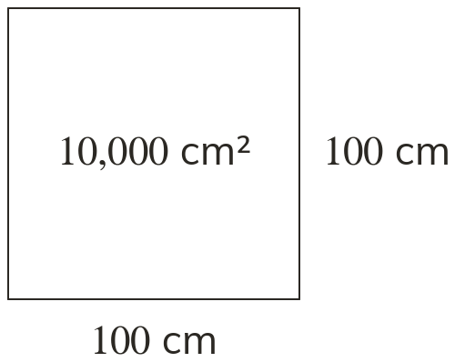
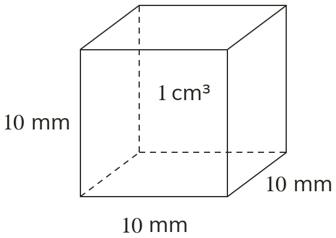
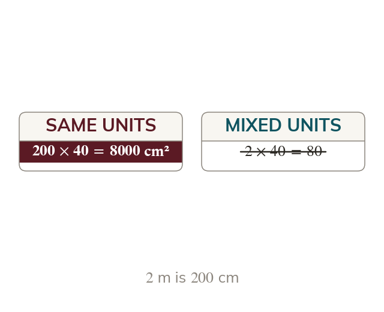
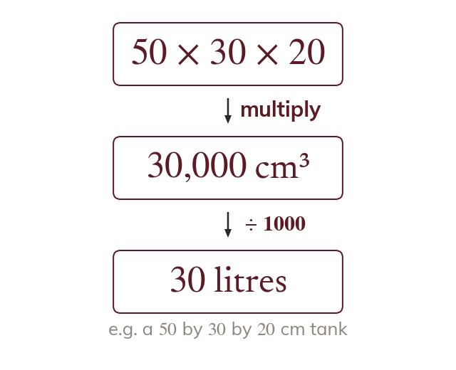

Area squares the factor
cm, so a square metre is cm by cm. Its area is cm², not cm²
Flooring is priced per square metre and a tank is measured in centimetres but filled in litres. Changing between these units is where most errors are made.
Work down the page at your own pace. Write every answer in your book first, then click to check it.
Read each card, then follow the worked examples one step at a time.

cm, so a square metre is cm by cm. Its area is cm², not cm²
For area, the length factor is squared. For volume, it is cubed. So m³ cm³


Pick an answer. If it's wrong, the feedback tells you which mistake it was.
Read each card, then follow the worked examples one step at a time.

Put every length in the same unit before working out an area or volume. So m by cm becomes cm by cm.

Work in one unit, then convert the answer at the end. A capacity uses litre cm³
Pick an answer. If it's wrong, the feedback tells you which mistake it was.
Finished? Next lesson: 10.13.1 Calculating with Decimals.
Log in, then search for a code to practise that skill.